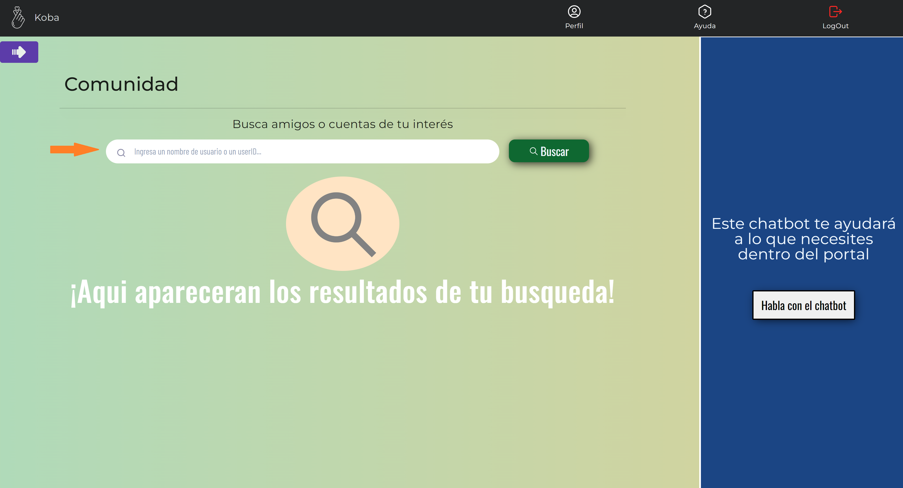
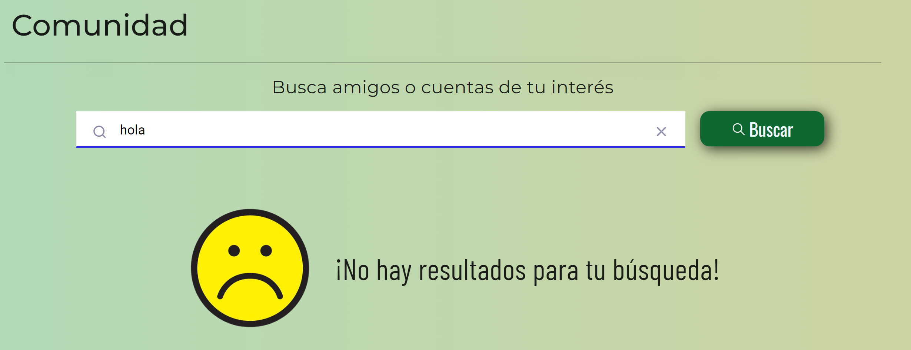
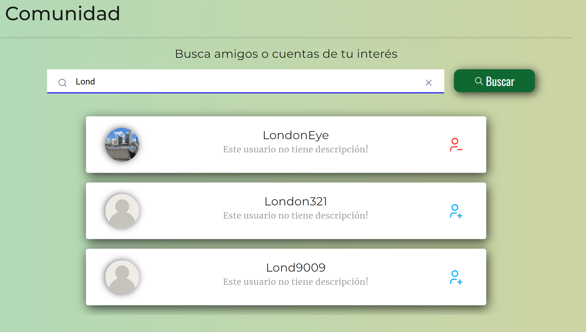
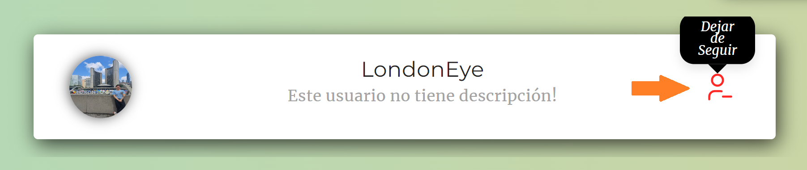

<mat-dialog-content>  
    <div id="carouselExampleCaptions" class="carousel slide">
      <div class="carousel-indicators">
        <button type="button" data-bs-target="#carouselExampleCaptions" data-bs-slide-to="0" class="active" aria-current="true" aria-label="Slide 1"></button>
        <button type="button" data-bs-target="#carouselExampleCaptions" data-bs-slide-to="1" aria-label="Slide 2"></button>
        <button type="button" data-bs-target="#carouselExampleCaptions" data-bs-slide-to="2" aria-label="Slide 3"></button>
        <button type="button" data-bs-target="#carouselExampleCaptions" data-bs-slide-to="3" aria-label="Slide 4"></button>
      </div>
      <div class="carousel-inner">
        <div class="carousel-item active">
          
          <div class="carousel-caption d-none d-md-block">
            <h5 class="tituloSlide">Búsqueda</h5>
            <p class="descSlide">Puedes buscar cuentas através de la barra de búsqueda.</p>
          </div>
        </div>
        <div class="carousel-item">
          
          <div class="carousel-caption d-none d-md-block">
            <h5 class="tituloSlide colorAux">Búsqueda</h5>
            <p class="descSlide colorAux">Si no hay coincidencias con tu búsqueda aparecerá la pantalla vacía.</p>
          </div>
        </div>  
        <div class="carousel-item">
            
            <div class="carousel-caption d-none d-md-block">
              <h5 class="tituloSlide">Cuentas</h5>
              <p class="descSlide">Te aparecerán las cuentas resultado de tu búsqueda.</p>
            </div>
          </div>
          <div class="carousel-item">
            
            <div class="carousel-caption d-none d-md-block">
              <h5 class="tituloSlide">Cuentas</h5>
              <p class="descSlide">Puedes seguirlas o dejarlas de seguir con el ícono.</p>
            </div>
          </div>
      </div>
      <button class="carousel-control-prev" type="button" data-bs-target="#carouselExampleCaptions" data-bs-slide="prev">
        <span class="carousel-control-prev-icon" aria-hidden="true"></span>
        <span class="visually-hidden">Previous</span>
      </button>
      <button class="carousel-control-next" type="button" data-bs-target="#carouselExampleCaptions" data-bs-slide="next">
        <span class="carousel-control-next-icon" aria-hidden="true"></span>
        <span class="visually-hidden">Next</span>
      </button>
    </div> 
</mat-dialog-content>